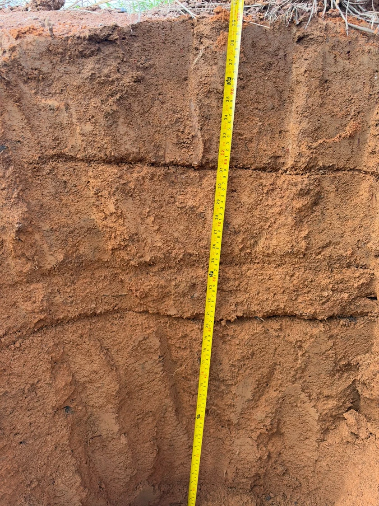
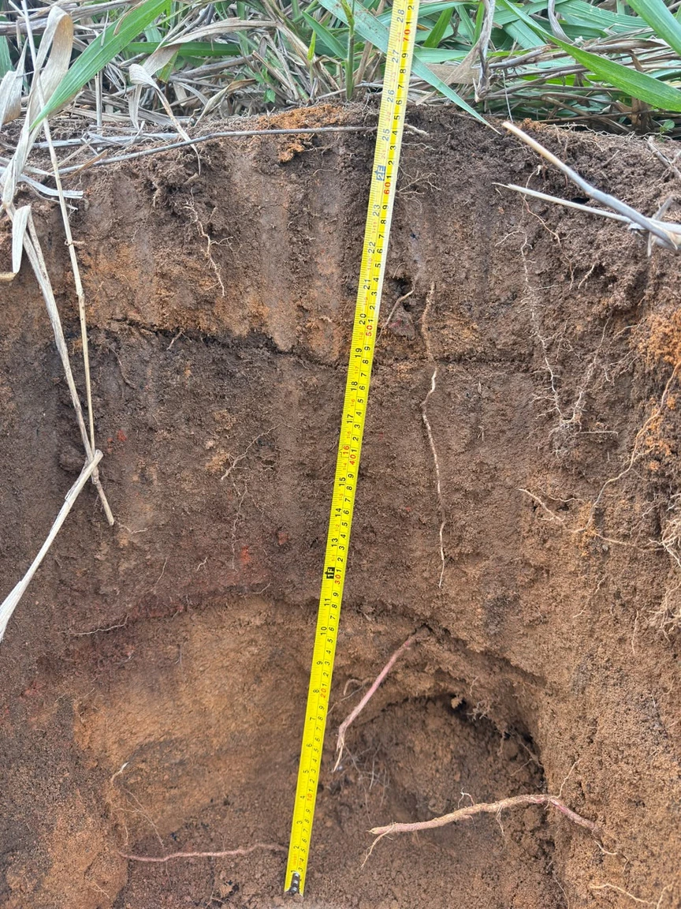
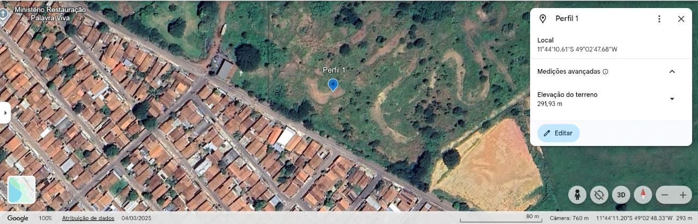

ATLAS INTERATIVOExploração dos perfisUFT · CAMPUS GURUPI
+ VISTA TRIDIMENSIONAL01
HORIZONTE ATIVOA
Arraste para girar o perfil
Camada A — 0–20 cm
SUPERFÍCIEPROFUNDIDADE
DOIS PERFIS, LADO A LADO
A diferença aparece
quando você compara.
Deslize sobre as fotografias para alternar entre os perfis. Selecione um horizonte para comparar os registros de campo.


01 VERMELHO-AMARELO
02 AMARELO
↔
Horizontes superficiais dos dois perfis.
| Atributo | Perfil 01 | Perfil 02 |
|---|
LEITURA DA PAISAGEM
Antes do perfil,
o lugar.
Selecione um ponto no diagrama para percorrer os registros de localização do estudo em Gurupi.
GURUPITOCANTINS · BRASIL
N ↑DIAGRAMA DE LOCALIZAÇÃO · SEM ESCALAPrimeiro perfil

Imagem do relatório · Google Earth · página 3
- PONTO REGISTRADO NO GOOGLE EARTH
- 11°44′10.61″S · 49°02′47.68″W
- ELEVAÇÃO REGISTRADA
- 291,93 m
O PDF apresenta pontos distintos nos dois serviços. Alterne o registro para consultar a imagem e as coordenadas correspondentes.
DA OBSERVAÇÃO AO USO AGRÍCOLA
Como o solo
responde ao manejo.
Relevo, água e mecanização: explore as interpretações apresentadas pelos autores para cada perfil.
CLASSIFICAÇÃO PROPOSTA NO TRABALHO
Latossolo Vermelho-Amarelo Distrófico típico
Infiltração e drenagem
Retenção de água
Mecanização
CUIDADO DESCRITO NO RELATÓRIO
Observe a umidade antes de trafegar.
A classificação como distrófico é presumida no relatório, sem análise química. As relações de porosidade, infiltração, drenagem e retenção de água são interpretações dos autores a partir da morfologia observada.
ATIVIDADE AVALIAÇÃO DE SOLO · GURUPI, 2026
Observar. Descrever.
Compreender.
Dois perfis, seis horizontes e as interpretações do relatório de morfologia do solo.
O QUE A MORFOLOGIA REVELA
O perfil conta a história do solo.
A morfologia do solo estuda, descreve e interpreta os atributos visíveis e táteis do perfil pedológico em campo: cor, textura, estrutura, consistência e porosidade. Essa leitura fundamenta a classificação dos solos e a compreensão de sua formação.
Na prática, orienta o manejo agrícola, ambiental e de engenharia ao ajudar a interpretar a retenção de água, a aeração, o risco de erosão e a aptidão de uso da terra.
CLASSIFICAÇÕES PROPOSTAS NO TRABALHO
01Latossolo
Latossolo
Vermelho-Amarelo
Distrófico típico
O relatório descreve um solo muito evoluído, com horizonte Bw, estrutura granular pequena e consistências macia e friável.
O matiz 7.5 YR é relacionado à presença de hematita, associada ao tom vermelho, e de goethita, associada ao tom amarelo.
02Latossolo
Latossolo
Amarelo
Distrófico típico
O trabalho descreve um solo muito evoluído e profundo, com horizonte Bw entre 50 e 95 cm, textura franco-argilosa e estrutura moderada, pequena e granular.
A cor 10 YR 5/8 no horizonte B é associada ao predomínio de goethita. O texto a enquadra no critério de matiz 7,5 YR ou mais amarelo.
O que significa distrófico?
No relatório, indica baixa fertilidade natural, com saturação por bases V < 50%. Os autores presumem essa condição por ser comum na classe; não foi apresentada análise química laboratorial.
O que significa típico?
Representa o conceito central da classe. O trabalho não identifica características intermediárias ou restritivas; no Perfil 2, cita como exemplos o caráter coeso e a plintita.
Notas de leitura dos registros
Perfil 1: profundidade. A tabela corrigida da página 9 registra 43–67 cm para o horizonte B, valor adotado no explorador, na comparação e na apresentação. A descrição da página 7 ainda apresenta 20–43 cm.
Perfil 1: camada inferior. O esquema da página 4 usa C; a descrição da página 7 e a tabela da página 9 usam B. O explorador segue a descrição e a tabela.
Perfil 2: transição. O esquema e a descrição usam BA (páginas 11 e 13); a tabela da página 16 usa AB para o intervalo de 22–50 cm. O explorador mantém BA.
Localização. As páginas 3 e 10 apresentam pontos diferentes no Google Earth e no Google Maps. A seção Campo permite consultar separadamente as imagens e coordenadas de cada serviço.
Transições. As tabelas registram transição gradual nos seis horizontes. Esse atributo foi incluído nas fichas e na comparação.